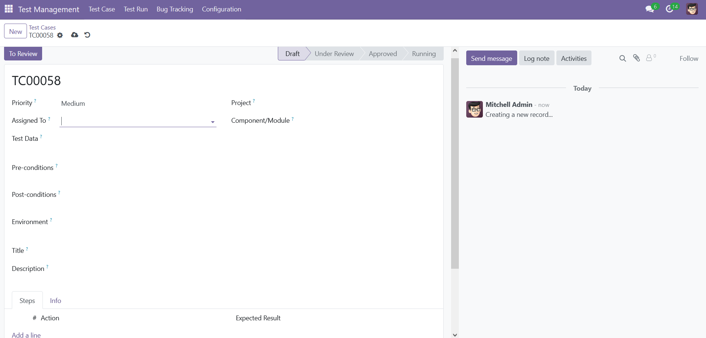
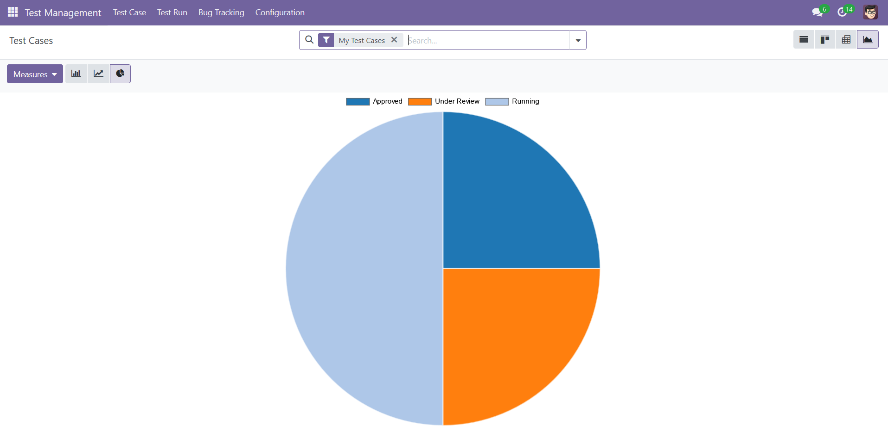
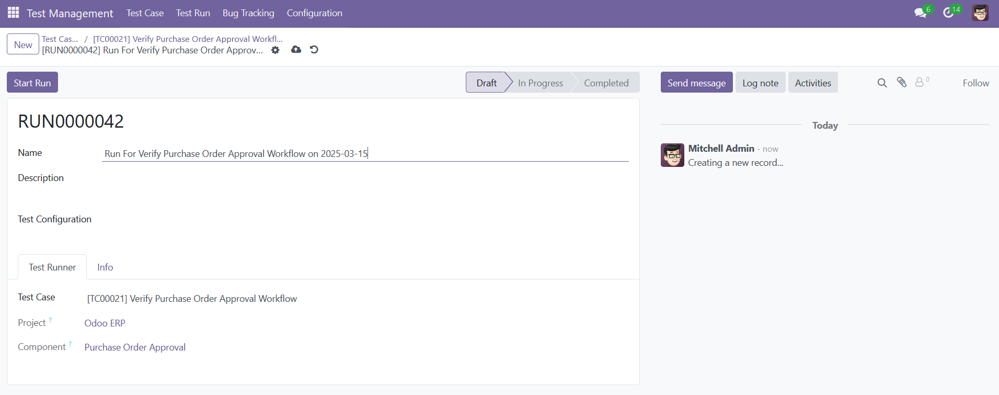
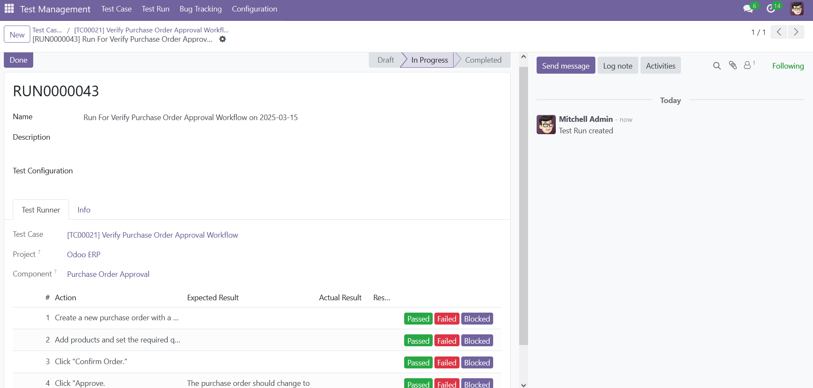
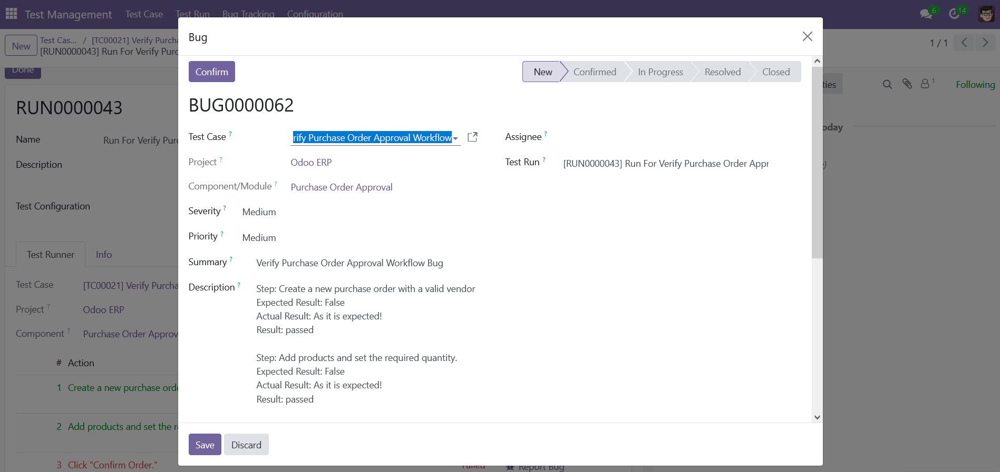
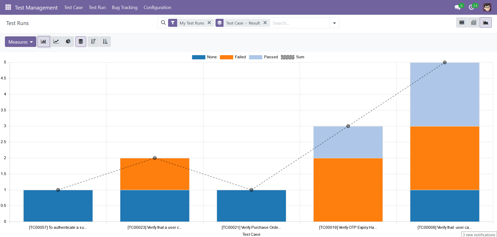
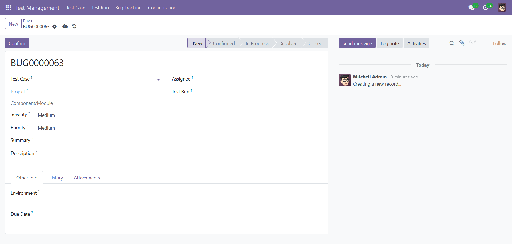
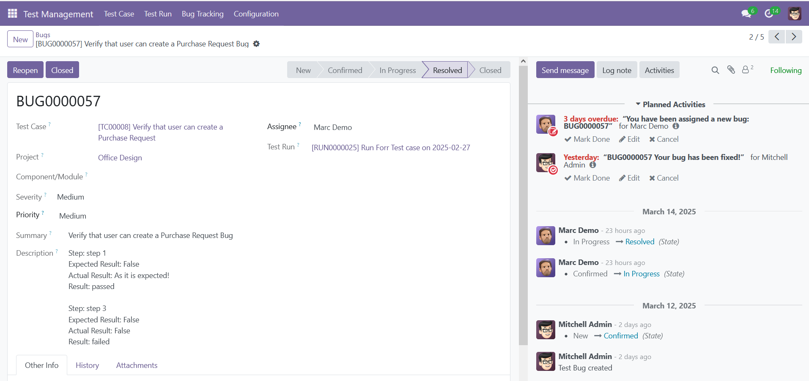
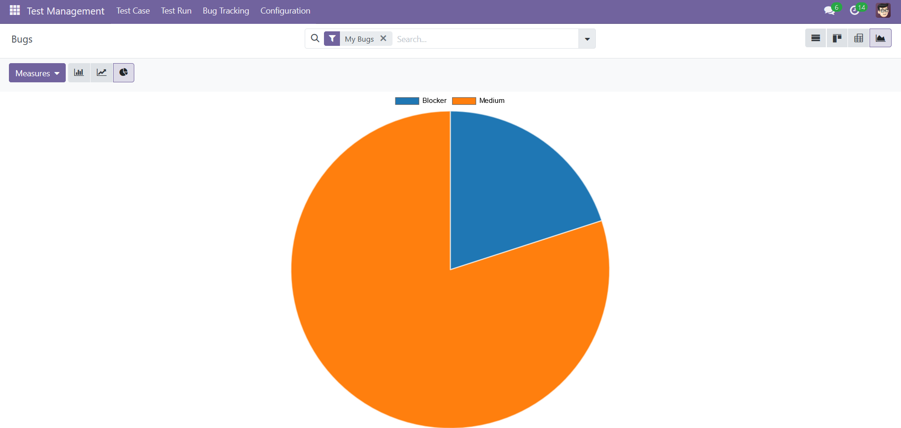
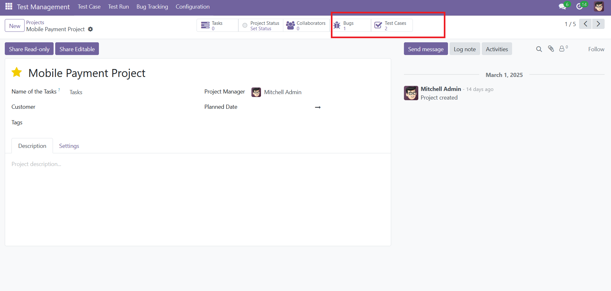

Test Management Module
This Odoo module is designed to manage test cases, test runs, test steps, and bugs in a structured and efficient manner. It provides a comprehensive solution for quality assurance teams to plan, execute, and track testing activities.
Features
1. Test Case Management
- Test Case Lifecycle Management:
- Track test cases through their lifecycle with states: Draft, Under Review, Approved, Running, and Executed.
- Automatically log timestamps for key events (e.g., creation date, review date, execution date).
Test Case Form

- Graph and Pivot Views:
- Analyze test case data using graphs (e.g., test cases by state) and pivot tables (e.g., test cases by project and state).
Test Case Graph

2. Test Run Management
- Test Run Lifecycle Management:
- Track test runs through their lifecycle with states: Draft, In Progress, and Completed.
- Once a test case is Approved, testers can create and execute test runs.
- Test runs are automatically linked to the approved test case, ensuring traceability and consistency.
Runing the Test Case

- Test Steps Execution:
- Execute test steps and log the actual results.
- Mark test steps as Passed, Failed, or Blocked.
- Report bugs directly from failed or blocked test steps.
Execute Test Steps

- Bug Tracking:
- Track bugs associated with a test run.
- View a list of related bugs from the test run form.
Report Bug

- Graph and Pivot Views:
- Analyze test run data using graphs (e.g., test runs by status) and pivot tables (e.g., test runs by project and component).
Test Run Analysis

3. Bug Tracking
- Bug Lifecycle Management:
- Track bugs through their lifecycle with states: New, Confirmed, In Progress, Fixed, Retesting, Re-opened, and Closed.
- Automatically log timestamps for key events (e.g., reported date, fix start date, fix end date).
Bug Form

- Automated Activities:
- Schedule activities for bug assignment, reopening, fixing, and closing.
- Notify users when a bug is assigned, reopened, fixed, or closed.
Notifications

- Time Tracking:
- Log Fix Start Date and Fix End Date when a bug is fixed.
- Track the time taken to resolve a bug.
- Graph and Pivot Views:
- Analyze bug data using graphs (e.g., bugs by severity) and pivot tables (e.g., bugs by project and state).
Bug Analysis

4. Project Integration
- Each project now displays the number of associated bugs and test cases.
- These counts are automatically computed and updated in real-time.
- Quick Access to Bugs and Test Cases:
- From the project form, you can directly access the list of bugs and test cases associated with the project.
- Use the View Bugs and View Test Cases buttons to open filtered lists of bugs and test cases.

Installation
1. Prerequisites
2. Installation Steps
- Download the module to your Odoo addons directory.
- Restart the Odoo server.
- Go to the Odoo Apps menu and search for Test Management Module.
- Click Install.
Configuration
1. Access Rights
- Assign the appropriate access rights to users:
- QA Engineer: Full access to test cases, test runs, and bugs.
- Developer: Access to bugs.